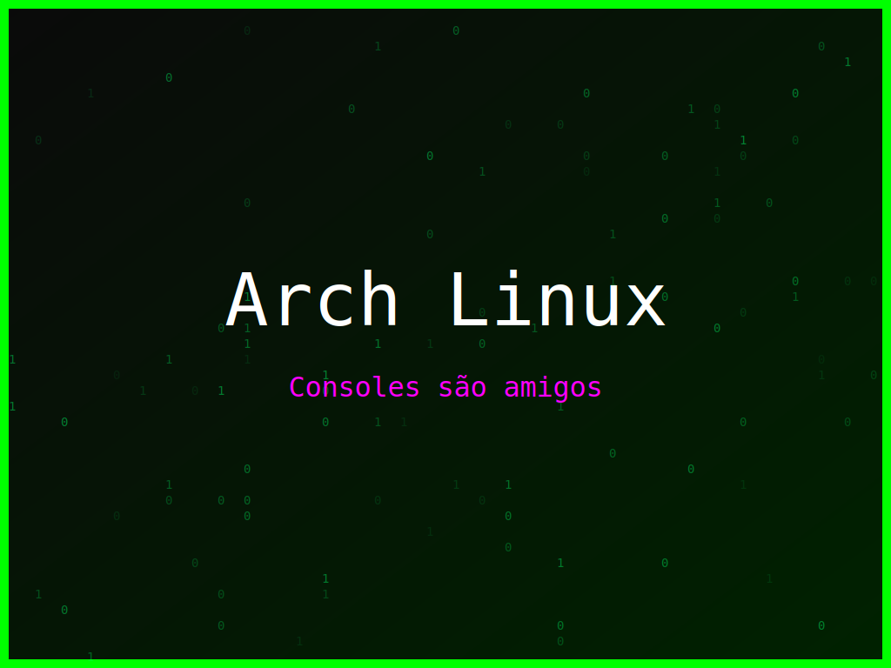

<section class="post-content">


    <div class="details-container">
        
        
        <ul class="details-list">
            <li><strong>Autor:</strong> piolinux</li>
            <li><strong>Descrição:</strong> Wallpaper Arch Linux com um toque de humor para os que vivem no modo geek.</li>
            <li><strong>Distro:</strong> Arch Linux</li>
            <li><strong>Frases:</strong> Geek Mode On, Consoles são amigos, Compilar é poder</li>
            <li><strong>Tags:</strong> matrix, colorido</li>
        </ul>
        <a href="../galeria.html">Voltar para a galeria</a>||
        <a href="../wallpaper22.svg" download="wallpaper-arch-linux-modo-geek-on.svg">Baixar Wallpaper</a>
    </div>

</section>
